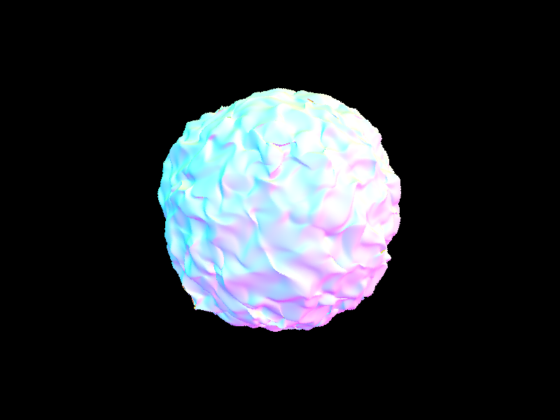
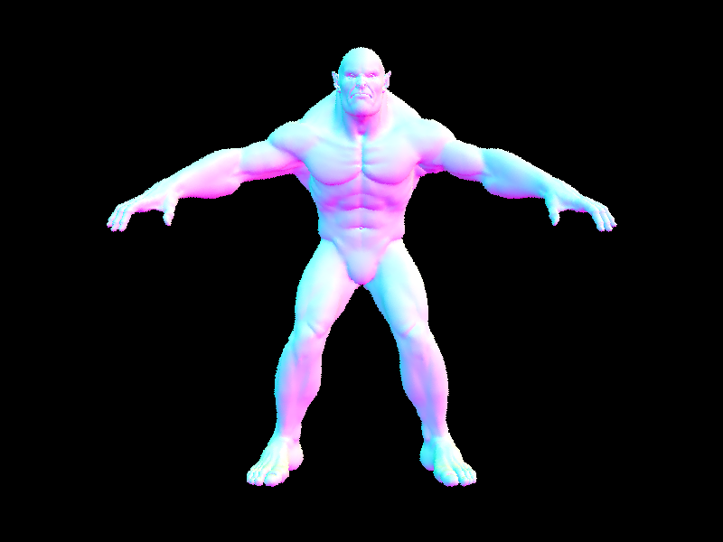
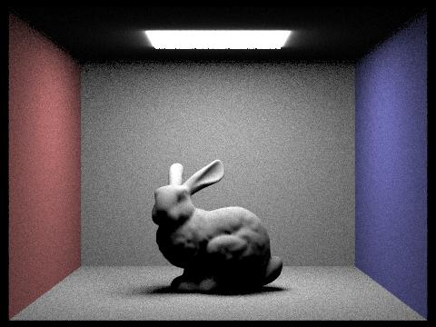
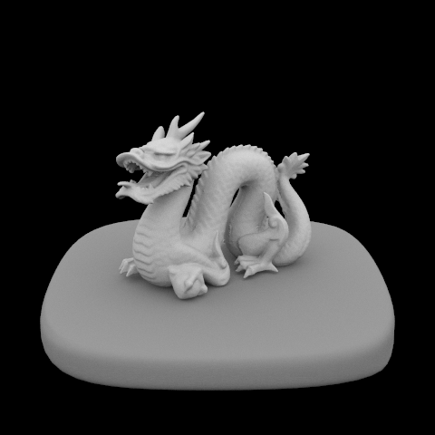
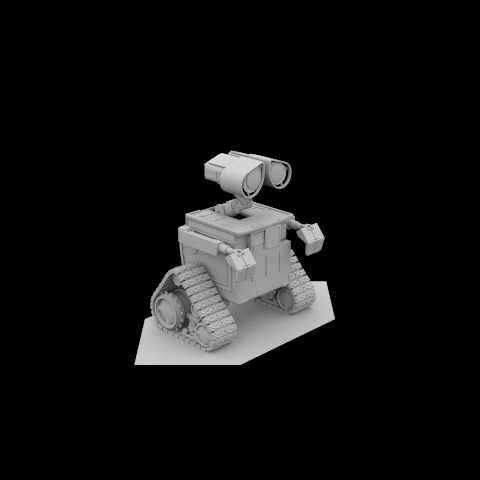
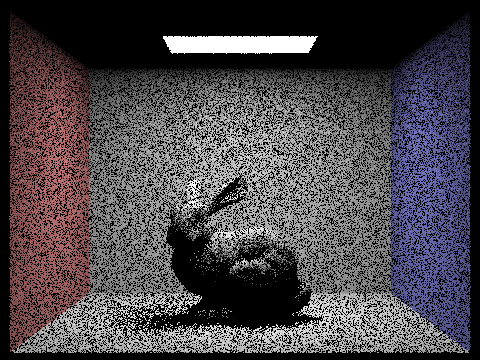
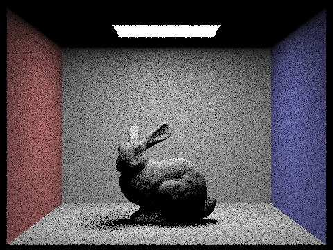
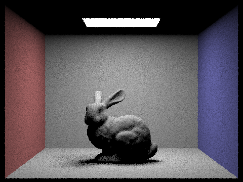
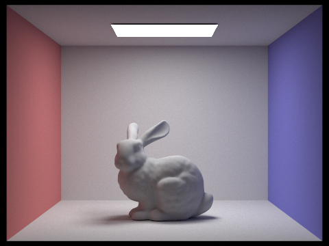
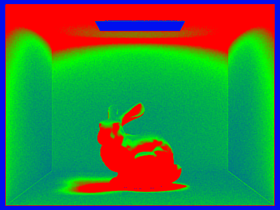

CS184/284A Spring 2026 Homework 3 Write-Up
Calvin Lee
Link to webpage: cal-cs184-student.github.io/hw-webpages-kalevyne/
Link to GitHub repository: github.com/cal-cs184-student/hw-webpages-kalevyne/tree/main
Overview
In this homework, I implemented a rendering pipeline that includes increasingly more complex and efficient ray-scene intersection starting with primitives, and moving to acceleration using a BVH. I implemented direct illumination using both uniform hemisphere and importance sampling, showing how importance sampling converges much faster by focusing on the direction of the light sources. I worked on extending the renderer to support global illumination using recursive ray tracing to capture indirect lighting effects such as color bleeding and soft shadows. Finally, I implemented adaptive sampling to dynamically allocate more samples to more complex parts of the scene, improving both rendering efficiency and image quality. A lot of these concepts showed up in lecture, and seeing the drastic differences each step made was very interesting to see.Part 1: Ray Generation and Scene Intersection
Rays are generated from the camera for each pixel in the image. The camera's generate_ray function takes normalized pixel coordinates (x, y between 0 and 1) and computes the corresponding point in camera space. The ray is then created starting from the camera position and passing through the sensor in camera space, transformed into world space using the camera-to-world matrix.Once rays are generated, they are intersected with the scene geometry. Intersection was performed directly with triangles and spheres. The rays were tested against each primitive in the scene. For triangles, the Moller-Trumbore algorithm is used, which utilizes barycentric coordinates by solving a linear system to determine if the ray intersects the triangle. For spheres, the quadratic formula is solved to find intersection points with the sphere equation.
The triangle intersection algorithm works by first computing the edges of the triangle (e1 = p2 - p1, e2 = p3 - p1). It then uses the cross product to set up equations for finding the barycentric coordinates u and v. The algorithm checks if the intersection point lies within the triangle (0 ≤ u,v ≤ 1 and u+v ≤ 1) and within the ray's valid distance range. If so, it interpolates the normal at the intersection point using the barycentric weights and returns the intersection details.
Below are normal-shaded renderings of small .dae files, where the color at each pixel represents the surface normal (mapped from [-1,1] to [0,1] for RGB display):

|

|

|
 |
Part 2: Bounding Volume Hierarchy (BVH)
The BVH construction algorithm builds a hierarchical acceleration structure recursively. Starting with all primitives, it computes a bounding box that encloses them all. If the number of primitives is less than or equal to the maximum leaf size, it creates a leaf node containing all primitives. Otherwise, it selects the axis with the largest extent in the bounding box. It then computes the centroids of all primitive bounding boxes along this axis, finds the minimum and maximum centroid values, and chooses the splitting point as the midpoint between these values. The primitives are partitioned into two groups based on whether their centroid is less than or equal to the split point. If the partition results in all primitives on one side, it falls back to creating a leaf node to avoid infinite recursion. Otherwise, it recursively constructs the left and right child subtrees.The heuristic for picking the splitting point is the midpoint split along the axis of maximum extent. This strategy aims to balance the number of primitives in each subtree by splitting at the center of the centroid distribution, reducing the likelihood of unbalanced trees that could lead to poor traversal performance.
Below are normal-shaded renderings of large .dae files that require BVH acceleration for feasible rendering times:

|
 |
Rendering times for moderately complex geometries show dramatic improvements with BVH acceleration. For the maxplanck scene, rendering took 0.1504 seconds with BVH compared to 132.0281 seconds without, representing an over 800-fold speedup. Similarly, the beast scene rendered in 0.0985 seconds with BVH versus 165.1686 seconds without, yielding an over 1600-fold improvement. These results demonstrate the critical importance of spatial acceleration structures for interactive and production rendering, as naive primitive intersection becomes prohibitively slow for increasingly larger, more complex scenes with thousands of geometric elements. BVH traversal allows for logarithmic-time reduction of irrelevant geometry.
Part 3: Direct Illumination
Direct illumination involves computing the light that reaches a surface point directly from light sources, without considering indirect bounces. Two implementations are provided: uniform hemisphere sampling and importance sampling based on light sources.In uniform hemisphere sampling, directions are sampled uniformly in the hemisphere oriented around the surface normal. For each sample direction, a ray is traced from the surface point, and if it intersects a light source, the contribution is accumulated based on the BSDF, emission, and cosine term. This method is unbiased but inefficient, as most sampled directions do not hit lights, requiring many samples for convergence.
In importance sampling, the sampling is focused on the actual light sources. For each light, samples are drawn from the light's surface, and shadow rays are cast to check visibility. If the light is not blocked, the contribution is computed using the BSDF, light radiance, cosine factor, and divided by the sampling probability. This approach converges much faster by prioritizing directions that are likely to contribute light.
The following images show renderings with both sampling methods at 64 light rays and 32 samples per pixel:
|
 |
|
Additional scenes rendered with importance sampling at 64 light rays and 32 samples per pixel:
|
 |
 |
Focusing on the bunny scene with an area light, the following images demonstrate noise reduction in soft shadows as the number of light rays increases from 1 to 64, with 1 sample per pixel using importance sampling:
|
 |
 |
|
 |
|
Comparing uniform hemisphere sampling and importance sampling reveals significant differences in efficiency and quality. Hemisphere sampling produces noisy results even with high sample counts because it wastes computations on directions that rarely contribute light, leading to slow convergence and visible artifacts in shadows and lighting. In contrast, importance sampling converges much faster by directly sampling light sources, producing cleaner soft shadows and more accurate illumination with fewer samples. This is particularly evident in scenes with area lights, where hemisphere sampling struggles to capture the directional nature of illumination, while importance sampling efficiently models light transport by prioritizing relevant directions and properly accounting for light visibility through shadow rays.
Part 4: Global Illumination
Global illumination combines direct lighting with indirect lighting that arrives after one or more bounces from other surfaces. In this implementation, the key function controls whether the renderer accumulates only direct illumination, only indirect illumination, or both together by recursively tracing rays until the configured `max_ray_depth` is reached.Indirect lighting is generated by sampling the BSDF at each hit point, spawning a new ray into the scene, and then adding the returned radiance from subsequent bounces. The function extends the direct light contribution by accumulating the reflected light from other surfaces, which is what produces soft color bleeding and the more realistic appearance of the scene.
Part 5: Adaptive Sampling
Adaptive sampling is a technique that dynamically adjusts the number of samples per pixel based on the convergence of the radiance estimate. Instead of using a fixed number of samples for every pixel, it evaluates the variance of the samples and stops sampling when the estimate is sufficiently converged within a specified tolerance. This can significantly reduce rendering time by allocating more samples to noisy or complex regions while using fewer samples for smooth areas.The implementation works by sampling pixels in batches. For each pixel, it accumulates samples in groups of `samplesPerBatch` until either the maximum sample count `ns_aa` is reached or the convergence criterion is met. After each batch, it computes the mean and variance of the luminance values. It then calculates a confidence interval using the standard deviation and if the interval is less than or equal to a given tolerance, the pixel is considered converged and sampling stops. This statistical test ensures that pixels with high variance (like edges or specular highlights) receive more samples, while uniform areas converge quickly.
|
 |
 |